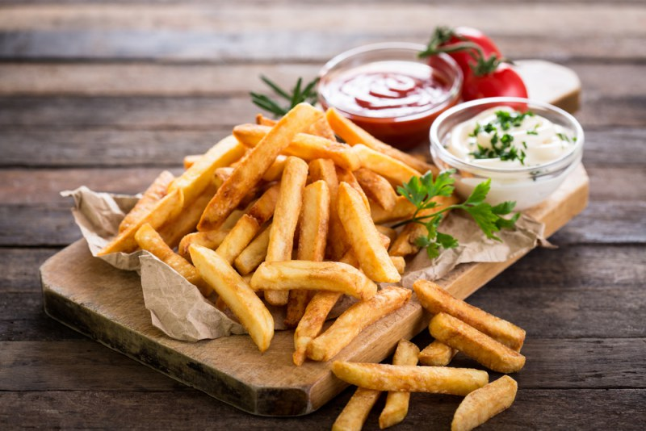

Брюссель вафлиі
Брюссель вафлиі – бұл қаладағы ең танымал десерттердің бірі. Ол өзінің жұмсақ әрі нәзік құрылымымен ерекшеленеді және көбінесе қант ұнтағы, балмұздақ немесе жидектермен беріледі.
Шоколад
Брюссель әлемдегі ең сапалы шоколадтың отаны ретінде танымал. Қалада бірнеше әйгілі шоколад өндірушілері бар, олардың өнімдері бүкіл әлемге танымал.
Картоп фриттері
Брюссельдегі фрит картобы – дәмді тағамдардың бірі. Оны арнайы дайындалған тұздықтармен бірге береді.